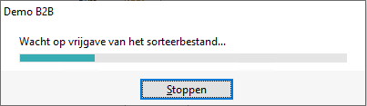

Deze melding kan verschijnen bij het afdrukken van een overzicht (tegelijkertijd) op twee taken of sessies.

-
Het sorteer bestand wordt gebruikt om bij het weergeven van een uitgebreide lijst bij de Selecteren programma's of bij het printen om een sortering op bepaalde kolommen te maken.
Oplossing
-
Wacht tot de eerst gestarte taak, die het sorteerbestand in gebruik heeft, gereed is.
of -
Druk op Stoppen.
 (
(